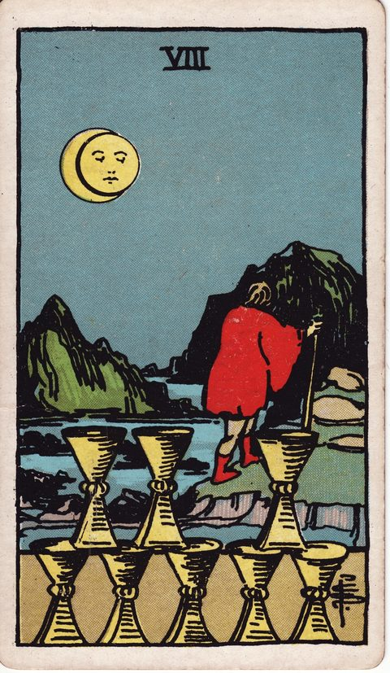
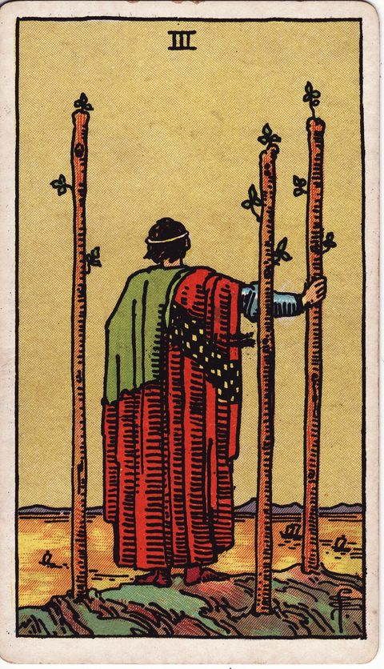
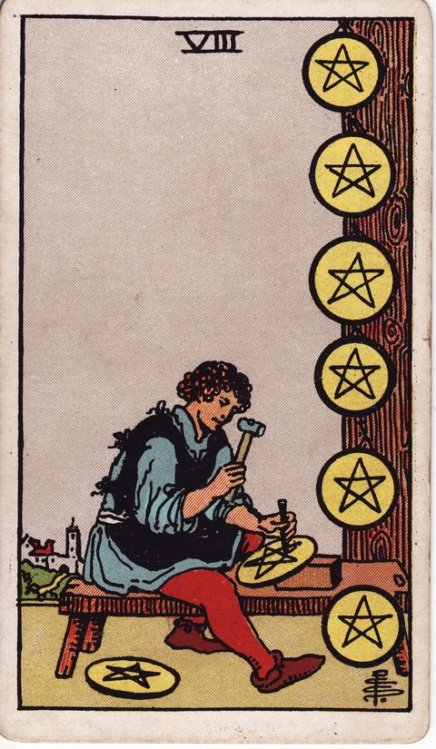
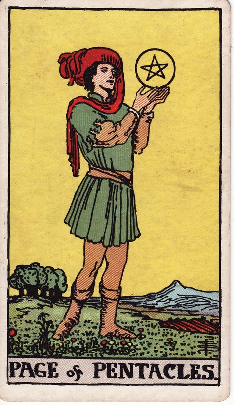
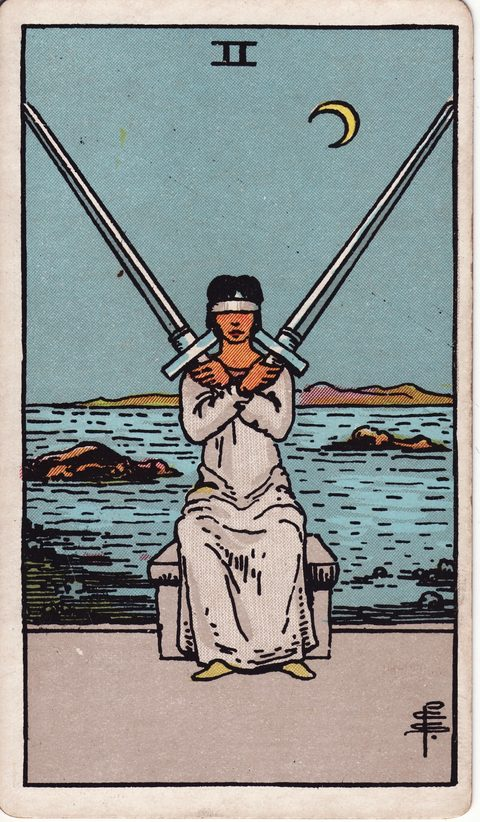
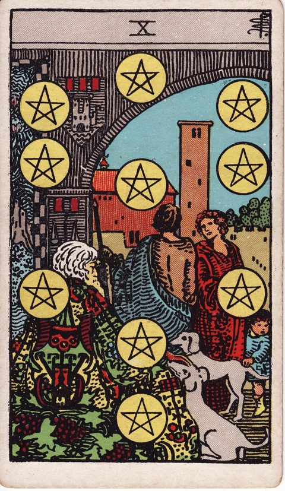
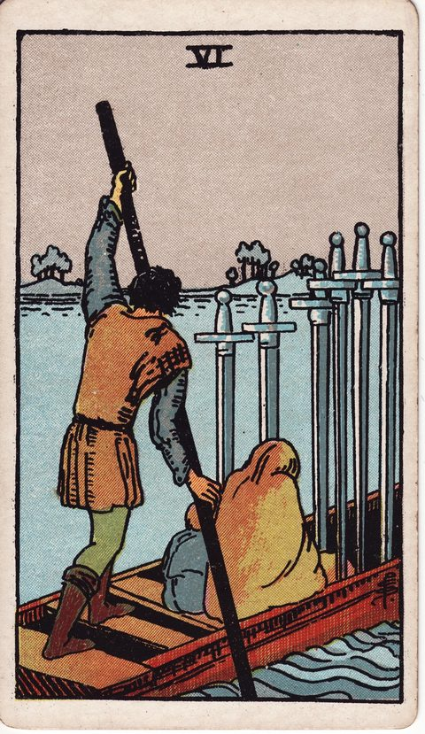
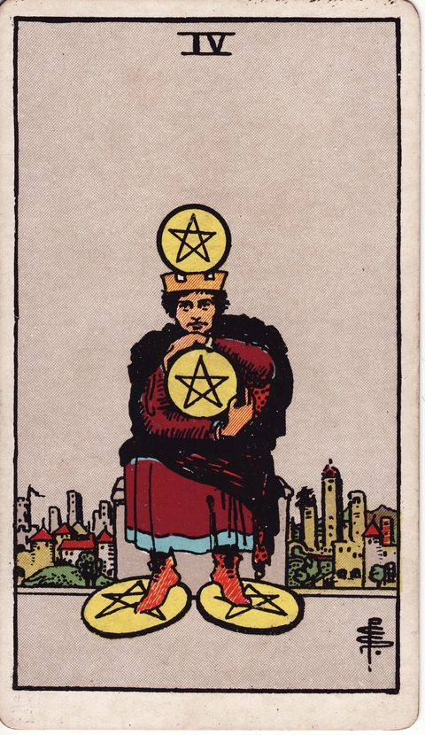
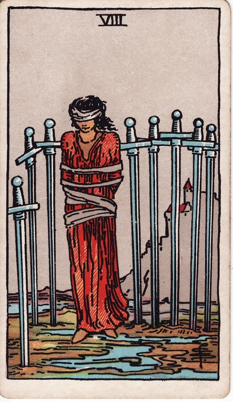

WORRY GUIDE
悩み別に読むタロット
大きな決断ほど、ひとりで考えていると同じところをぐるぐる回ってしまいがちです。転職、就活、副業、独立、学び直し、お金の使い方、恋愛、結婚、別れ、介護、引っ越し、人間関係。どれも正解がひとつに決まらず、どちらを選んでも何かを手放すことになる種類の迷いです。
このページでは、よくある迷いごとに「何が判断を難しくしているのか」「どんな順番で考えると整理しやすいか」をまとめ、その場面で視点を貸してくれるタロットカードを紹介しています。
カードは未来を言い当てるためのものではなく、見落としていた気持ちや条件に気づくための問いかけとして使ってください。
各ページでは、迷いの中身を分解する考え方を四つの観点から説明したうえで、関係するカードがなぜその場面で役立つのかを一枚ずつ解説しています。
気になるテーマから読み始め、最後にDECIDE.で実際の二つの選択肢を並べてみると、頭の中だけで考えていたときよりも、自分が本当に大切にしたいものが見えやすくなるはずです。
このページの使い方
- 近いテーマを選ぶいまの迷いにいちばん近いものを開きます。ぴったりでなくても大丈夫です。
- 迷いをほどく「迷いの正体」と「整理の視点」で、何に引っかかっているのかを言葉にします。
- カードの視点を借りる関係するカードの意味を読み、見落としていた気持ちや条件を探します。
- 実際に引いてみる二つの選択肢を思い浮かべて、DECIDE.でカードを引きます。
仕事・キャリア
働き方や収入にかかわる迷い。条件の比較だけでは決めきれないときに。

転職するか迷うとき鍵になるカード：カップの8
考え方を読む →転職したい気持ちと、今の職場に残る理由のあいだで迷っている人へ。迷いの正体、整理の視点、関連するタロットカードの読み方と、自分に投げかけたい問いをまとめました。
今の仕事で、まだ試していない改善策はあるか？

就活で迷うとき鍵になるカード：ワンドの3
考え方を読む →志望業界が決まらない、どの内定を承諾するか迷っている、選考がうまくいかないなど、就職活動で迷っている人へ。迷いの正体と整理の視点、関連するタロットカードと問いかけを紹介します。
周りの評価を気にしなくてよいとしたら、どんな会社を選びたいか？

副業を始めるか迷うとき鍵になるカード：ペンタクルの8
考え方を読む →副業を始めたいけれど時間や体力が続くか、本業に影響しないか、何をすればいいか分からないと迷っている人へ。迷いの正体、整理の視点、関連するタロットカードと問いかけを紹介します。
副業に使える時間は、一週間に何時間あるか？

独立・起業で迷うとき鍵になるカード：ワンドの2
考え方を読む →会社を辞めて独立するか、自分で事業を起こすかで迷っている人へ。挑戦したい気持ちと安定への不安のあいだにある迷いの正体、整理の視点、関連するタロットカードと問いかけを紹介します。
収入がゼロの月が続いても、何か月なら耐えられるか？

進学・学び直しで迷うとき鍵になるカード：ペンタクルのペイジ
考え方を読む →進学先選びや、社会人の学び直し・資格取得で迷っている人へ。時間とお金をかける価値があるのか、迷いの正体と整理の視点、関連するタロットカードと問いかけをまとめました。
この学びを終えたとき、自分はどんな状態になっていたいか？

恋愛・家族
大切な人との関係にかかわる迷い。気持ちと現実のあいだで揺れるときに。

恋愛で迷うとき鍵になるカード：カップの2
考え方を読む →告白するか、関係を続けるか、相手の気持ちが分からないなど、恋愛で迷っている人へ。揺れる気持ちの正体、整理の視点、関連するタロットカードと自分への問いかけを紹介します。
相手と一緒にいるとき、自分らしくいられているか？

結婚に踏み切れないとき鍵になるカード：恋人
考え方を読む →結婚するかどうか、今の相手でいいのか迷っている人へ。人生の大きな選択に伴う迷いの正体、整理の視点、関連するタロットカードの読み方と問いかけを紹介します。
結婚して手に入れたいものは何か、失うのが怖いものは何か？

別れるか迷うとき鍵になるカード：ソードの2
考え方を読む →恋人やパートナーと別れるべきか迷っている人へ。情と違和感のあいだで揺れる気持ちの正体、整理の視点、関連するタロットカードの読み方と問いかけを紹介します。
この関係の中で、自分らしくいられる時間はどのくらいあるか？

介護で迷うとき鍵になるカード：ペンタクルの10
考え方を読む →親の介護を自宅でするか施設に頼るか、仕事と両立できるかなど、介護で迷っている人へ。家族への思いと自分の生活のあいだにある迷いの正体、整理の視点、関連するタロットカードと問いかけを紹介します。
今の介護の形を、一年後も続けられそうか？


暮らし・お金・人づきあい
毎日の土台にかかわる迷い。小さく見えて、あとから効いてくる選択に。

引っ越しを決められないとき鍵になるカード：ソードの6
考え方を読む →引っ越すか今の家に住み続けるか決められない人へ。費用・環境・人間関係が絡む住まいの迷いの正体、整理の視点、関連するタロットカードと問いかけをまとめました。
今の家で一番ストレスに感じていることは何か、それは引っ越しで本当に解消されるか？

大きな買い物・お金の使い方で迷うとき鍵になるカード：ペンタクルの4
考え方を読む →車・家・高額な家電などの大きな買い物や、お金の使い道で迷っている人へ。欲しい気持ちと不安のあいだにある迷いの正体、整理の視点、関連するタロットカードと問いかけを紹介します。
それを手に入れることで、毎日の暮らしはどう変わるか？

人間関係で迷うとき鍵になるカード：ソードの8
考え方を読む →友人・職場・家族との関係を続けるか、距離を置くかで迷っている人へ。人付き合いの迷いの正体、整理の視点、関連するタロットカードの読み方と問いかけをまとめました。
その人と会ったあと、自分はどんな気持ちになっているか？
カードの意味を読んだら、次はあなた自身の選択肢で。
カードを引いて、決めたいことを整理する